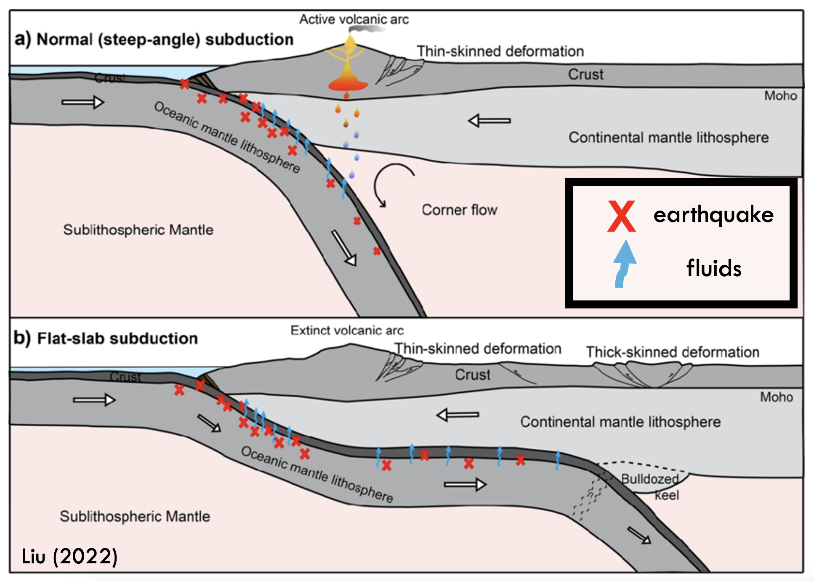
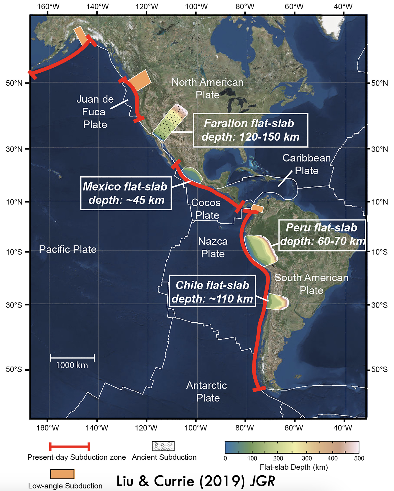

Flat-Slab Subduction
Subduction zones around the world exhibit remarkable diversity in slab dip, collision angle, seismicity, and volcanism.Subduction is a dynamic process. As tectonic plates evolve, slabs may advance or retreat over time. Older, colder, denser slabs tend to sink steeply into the mantle, while younger, warmer, and more buoyant slabs resist sinking.
Slab dip matters. It controls where deformation occurs, where volcanoes form, and how material is recycled back into Earth’s interior.
In the shallowly dipping endmember, known as flat-slab subduction, the descending plate first plows forward for hundreds of kilometers before sinking into the mantle. This unusual geometry pushes deformation and earthquake activity far inland compared to a typical subduction zone. It also chokes off preexisting arc volcanism and redistributes fluids and critical minerals across a much broader region.

Today, flat-slab subduction in a handful of places, including Chile, Peru, Colombia, and Mexico. One of the most dramatic examples in Earth’s history was the Farallon flat slab, which extended nearly to the center of the North American continent. This remarkable subduction geometry is thought to have contributed to the formation of the ancestral Rocky Mountains and the emplacement of the Colorado Mineral Belt. During this episode, even the center of the North American plate was not safe from plate tectonic deformation.How do mountain belts form hundreds of kilometers from the nearest plate boundary? We cannot travel back in time to observe the Farallon flat slab, but we can search for places that may be undergoing similar processes today. The present is the key to the past.
That brings us to Colombia, the focus of my current research. Colombia provides an exceptional natural laboratory for studying both flat slabs and one of their most intriguing byproducts—slab tears.